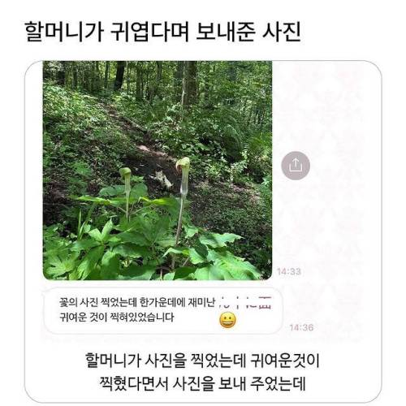
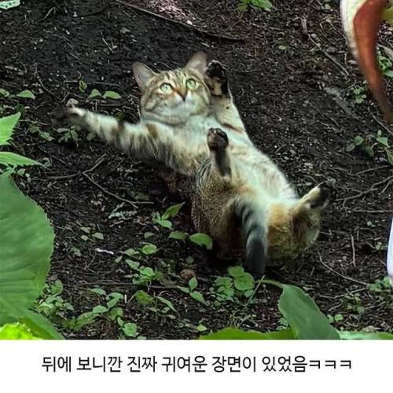

38 · 13 · 21 분 전 · 원문


수집 당시 댓글 13개
유아학교 · 1 시간 전
↳ 답글 · 댕멍꿀꿀 · 18 분 전
FluffyFox · 1 시간 전
끼룩끼룩이 · 1 시간 전
진짜 귀엽네 ㅋㅋㅋㅋㅋ
난놈 · 1 시간 전
ㅋㅋㅋㅋ ㅅㅂ눈물치트키 = 엄마귀여움치트키 = ㅈ냥쉑
보추퍼리게이진흥재단 · 32 분 전
미끄러지고 있어요 구해주세요
아침밥 · 30 분 전
가시참피쉑... 배방구 마렵네
↳ 답글 · 에이크노 · 3 분 전
확실히 대두 통통냥이가 커여운 듯 😻ㅋㅋㅋ
이직을어디로할수있을까 · 26 분 전
어케찍었대 ㄷㄷ
야돈처럼살고싶다 · 24 분 전
저거로 티셔츠만들어서 입고싶다
노란머리카이큐 · 24 분 전
왜용 · 19 분 전
왜 저러고 있어 ㅋㅋㅋㅋ
rclone · 4 분 전
발라당~


진짜 귀엽네 ㅋㅋㅋㅋㅋ